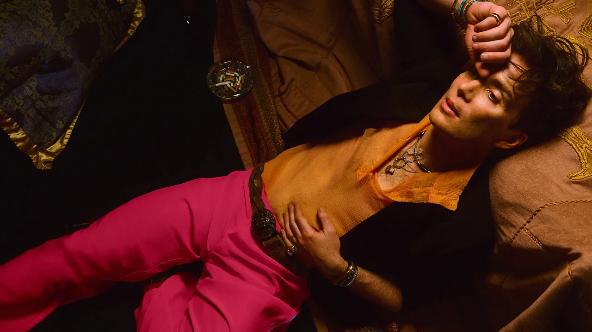
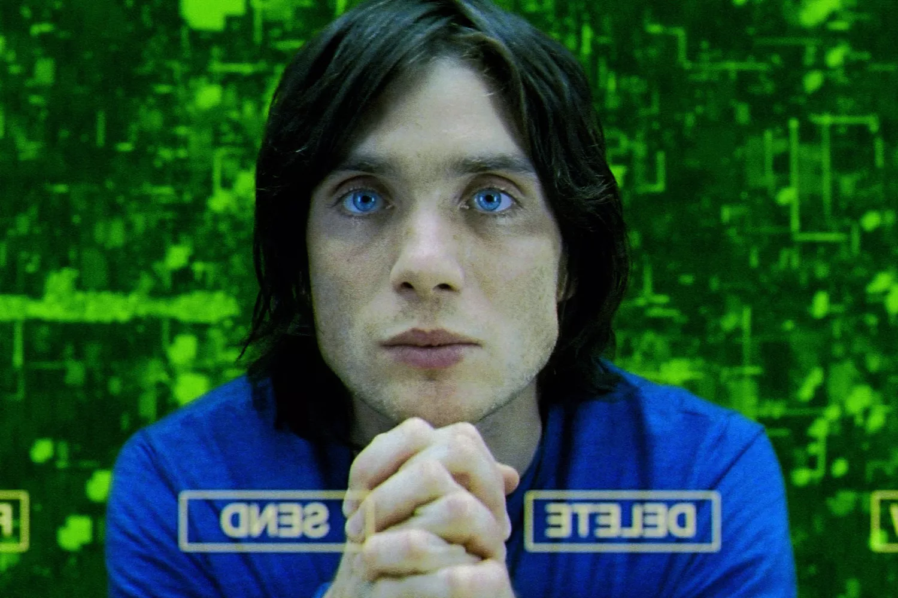

|  | Cillian MurphyCillian Murphy is an Irish actor. His works encompass both stage and screen, and his accolades include an Academy Award, a British Academy Film Award and a Golden Globe Award.He made his professional debut in Enda Walsh's 1996 play Disco Pigs, a role he later reprised in the 2001 screen adaptation. His early film credits include the horror film 28 Days Later (2002), the dark comedy Intermission (2003), the thriller Red Eye (2005), the Irish war drama The Wind That Shakes the Barley (2006), and the science fiction thriller Sunshine (2007). He played a transgender Irish woman in the comedy-drama Breakfast on Pluto (2005), which earned him his first Golden Globe Award nomination.Murphy began his collaboration with filmmaker Christopher Nolan in 2005, playing the Scarecrow in The Dark Knight trilogy (2005–2012) as well as appearing in Inception (2010) and Dunkirk (2017). He gained greater prominence for his role as Tommy Shelby in the BBC period drama series Peaky Blinders (2013–2022) and for starring in the horror sequel A Quiet Place Part II (2020). Murphy portrayed J. Robert Oppenheimer in Nolan's Oppenheimer (2023), for which he won the Academy Award for Best Actor.In 2011, Murphy won the Drama Desk Award for Outstanding Solo Performance for the one-man play Misterman. In 2020, The Irish Times named him one of the greatest Irish film actors of all time. |
Cillian Murphy Movies And Shows
|
Disco Pigs (2001) |
Red Eye (2005) |
The Party (2017) |
Anthropoid (2016) |
Dunkirk (2017) |
| 
Sunshine (2007) |

Batman Begins (2005) |
Inception (2010) |
Free Fire (2016) |
Breakfast on Pluto (2005) |
Cillian Murphy Accepts Academy Awards
|
Cillian Murphy Wins Best Male Actor – Motion Picture – Drama I 81st Annual Golden Globes |
Oscars 2024: Cillian Murphy accepts Academy Award for Best Actor in 'Oppenheimer' |
Cillian Murphy wins Leading Actor For 'Oppenheimer' | BAFTA Film Awards 2024 - BBC |